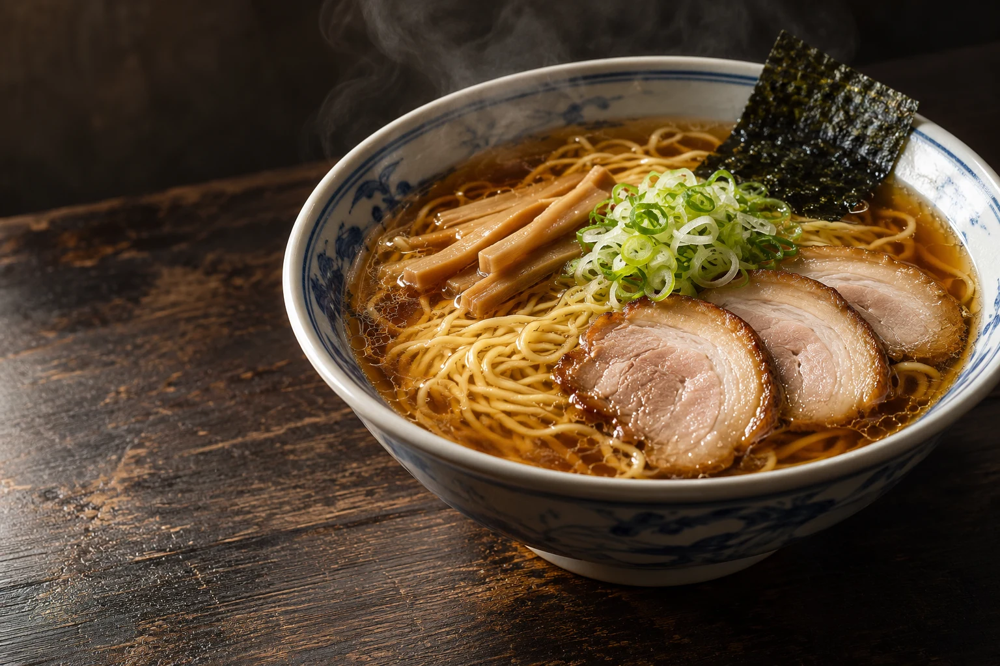

スープをまとう、細めの縮れ麺。
茹でる前に揉み込む、ひと手間。細めの縮れ麺が、スープの味わいを受け止めます。

写真はAI生成によるイメージです
SCROLL ↓ひと口のスープから、
最後のひとすすりまで。
すっきりとした味わいの中に、深いコク。
スープが絡む、細めの縮れ麺。
醤油だれの風味が染みたチャーシュー。
それぞれの持ち味が、一つの丼で重なる。
福よしの看板「中華そば」を、
今日のお昼にいかがでしょうか。
茹でる前に揉み込む、ひと手間。細めの縮れ麺が、スープの味わいを受け止めます。
鶏ガラやげんこつ、煮干しなどをじっくり煮込む。あっさりとした口当たりの中に、素材のうまみを。
国産の豚肩ロースを、継ぎ足してきた醤油だれに。福よしらしい味わいを添えています。
お昼になったら、
「福よし、行こうか。」
公式サイトでは11:00〜15:00と案内されています。スープがなくなり次第終了しますので、営業時間内でも早めに閉店する場合があります。
火曜日です。年末年始などは変更される場合があります。最新の営業情報をご確認のうえお越しください。
このページのおしながきは公式サイトの掲載情報を参考にしています。最新の価格や提供状況は、公式サイトまたは店頭でご確認ください。